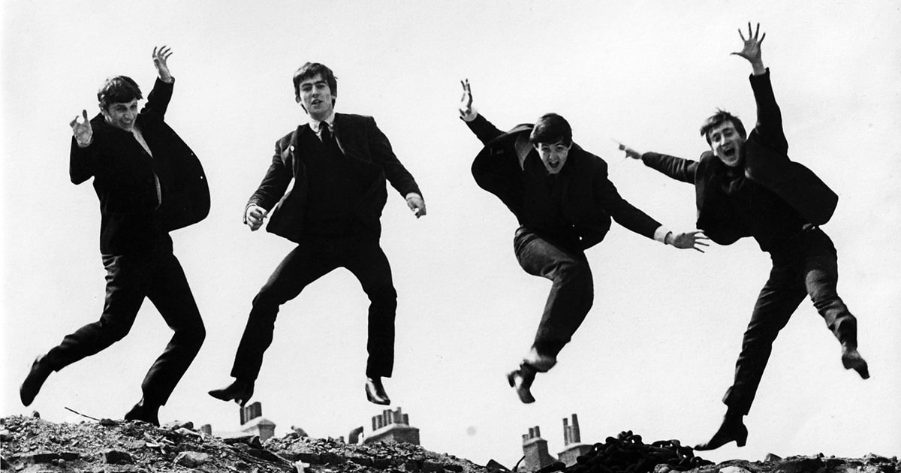

Sunday, December the 10th, 2017
back to: title, date or indexes

In 1964, the Beatles were banned from performing in Israel. An official government investigation into the Liverpudlian moptops discovered compelling evidence that their “'yeah yeah yeah’ howls are capable of striking dead a real beetle”.